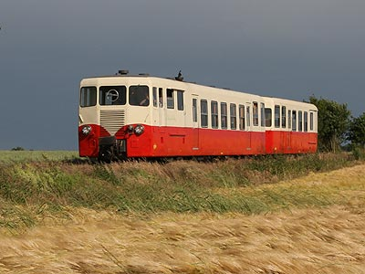

Reportages photo
Séries de photos à thèmes ferroviaires.
Balade sur le chemin de fer touristique du Bas-Berry
CC 6570 sur la ligne des Causses
La BB 667624 revêtant la nouvelle livrée Infra
à suivre...
 L'X 224 Verney sur le Train du Bas-Berry(07/06/2009)